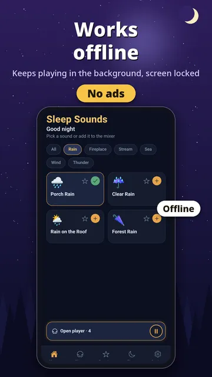

Dream Builder Apps · Sleep Sounds
Rain on a roof sleep sounds
“Rain on a roof” is a particular kind of rain: drops hitting a hard surface close above you, with a little more tap and less of the soft hiss of rain in open air. A lot of people look for that sound when they want to fall asleep to rain that feels indoor and enclosed, not like a storm in a field.
Sleep Sounds – Restful Night includes rain on a roof among four rain recordings, together with rain on a porch and rain in a forest. You can play the roof rain on its own, or mix it with other nature sounds already in the app.


Choosing a rain, and mixing it
Roof rain is usually steadier and more “indoor” than forest rain. If you like a little weather around it, you can add distant thunder or wind — up to five sounds at once — and turn each one down until the roof stays in front. If thunder feels like an event rather than a background, leave it out; many people who search for rain on a roof also look for versions with no thunder.
There are 23 nature sounds in the app in all, in six groups: rain, fireplace, stream, ocean, wind and thunder. Favorites save the sounds and their volumes, so the same roof mix is there the next night.
Made to play through the night, including offline
The recordings are built into the app, so rain on a roof works without Wi-Fi and without a ten-hour video. Playback continues when the screen is locked, and you can play or pause from the lock screen. A sleep timer of up to 12 hours ends with a gentle fade-out, and you choose the length of the fade. There are no ads in the app, which matters if you have been woken by a mid-video ad before.
For the wider question of rain that works on a plane, a train or anywhere the connection drops, see offline rain sounds for sleeping. If you want a different night sound, there is also a page on crackling fireplace sounds for sleep.
A calm background, not a medical treatment
Sleep Sounds is not a medical app and does not treat sleep disorders. Rain on a roof is just a familiar, steady background. Some people also use it to mask everyday noise; there is more about that in the guides on noisy neighbors and a snoring partner. Keep the volume comfortable.
Try the app
Sleep Sounds was first built for personal use, by someone who is sensitive to noise at night. A 7-day free trial starts on first launch. All features are available without payment details, and the trial does not turn into a paid subscription on its own. After that you can continue with a monthly subscription in Google Play, at the price shown before you subscribe. No tracking and no account. Made in Finland.
7 days free, then a monthly subscription. Sleep Sounds – Restful Night, on Android.